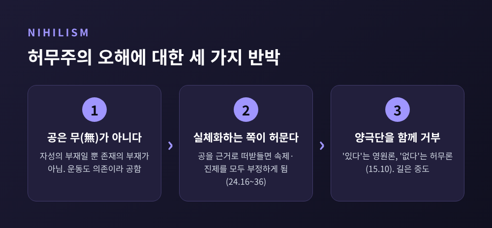

세 줄 요약
- 나가르주나의 공(空)은 "아무것도 없다"가 아니라 "독립된 본질(자성)이 없다"는 뜻입니다.
- 사물이 서로 의존해 생겨난다는 연기가 곧 공이며, 이 둘은 하나의 사실을 두 번 말한 것입니다.
- 사구부정과 이제설은 이 주장을 허무주의로 빠뜨리지 않으려는 논리적 장치로 읽을 수 있습니다.
이번 글에서는 나가르주나(용수, 龍樹)의 중관 사상을 논리와 철학의 눈으로 정리해 보겠습니다. 공과 연기가 무엇인지, 사구부정과 이제설이 어떻게 작동하는지, 그리고 왜 허무주의라는 오해를 받는지 차례로 살펴봅니다. 종교적 신앙의 문제가 아니라 하나의 철학적 논증으로 읽는 글입니다.
나가르주나는 대략 2~3세기에 활동한 것으로 알려진 불교 철학자입니다. 스탠퍼드 철학 백과(SEP)는 150~250년 사이로 보고, 브리태니커는 2세기로 적습니다. 연대가 이렇게 흐릿한 까닭은 생애 기록 대부분이 훗날 쓰인 성인전이기 때문입니다. 같은 이름의 다른 저자가 여럿 있다는 점도 변수입니다.
대표작은 『근본중송(Mūlamadhyamakakārikā)』, 흔히 『중론(中論)』이라 부르는 책입니다. 27장, 약 450송으로 이루어진 짧은 게송집입니다. 원래 암송하고 스승의 구술 주석으로 풀어 읽도록 만들어진 형식입니다.
구성도 눈여겨볼 만합니다. 1장은 인과(조건), 2장은 가고 오는 운동, 18장은 자아, 24장은 사성제, 25장은 열반을 다룹니다. 먼저 인과·운동·자아 같은 기초 개념을 하나씩 해체하고, 마지막에 불교의 핵심 교리까지 같은 칼로 살펴보는 순서입니다.
공(空, 산스크리트 śūnyatā)은 번역이 까다로운 단어입니다. emptiness, voidness 같은 영어 번역이 있지만 핵심은 "무엇이 비었는가"에 있습니다. SEP의 설명으로는 공은 언제나 "무언가의 공"이고, 그 무언가가 자성(自性, svabhāva)입니다. 자성은 inherent existence, intrinsic nature, essence, substance 등으로 옮기는데 어느 하나로 다 담기지 않는다고 합니다.
SEP는 자성을 세 가지로 나누어 봅니다. 잃으면 그것이 아니게 되는 본질, 다른 모든 것에서 독립해 존재하는 실체, 그리고 현상의 참된 본성으로서의 절대적 실재입니다. 중관이 겨누는 주된 과녁은 두 번째, 곧 홀로 존재하는 실체입니다.
쉬운 말로 바꾸면 이렇습니다. 탁자는 있습니다. 다만 나무와 못, 목수의 작업, 그것을 탁자라 부르는 우리의 관습에 기대어 있을 뿐, 혼자 힘으로 탁자인 탁자는 없다는 뜻입니다. 철학자 제이 가필드(Jay Garfield)는 탁자를 분석해 얻는 결론이 "탁자에 자성이 없다"는 사실뿐이며, 그 공성 역시 탁자에 의존한다고 풀이합니다.
한 가지 짚어 둘 점이 있습니다. 공을 머리로 이해하는 일과 몸으로 체득하는 일은 다르다는 점입니다. SEP는 뮐러-라이어 착시에 비유합니다. 두 선의 길이가 같다고 알아도 여전히 달라 보이는 것처럼, 자성이 없다는 말을 알아도 사물은 여전히 단단한 실체처럼 보입니다.
중관을 이해하는 열쇠는 『중론』 24장 18송입니다. 해석에 따라 번역이 조금씩 갈립니다.
"의존하여 함께 일어나는 것은 무엇이든 공이라고 설명된다." (가필드 번역)
연기(緣起)는 모든 것이 조건에 기대어 생겨난다는 원리입니다. 나가르주나는 이 연기를 곧바로 공이라고 부릅니다. 어떤 것이 조건에 의존한다면 독립된 자성을 가질 수 없고, 자성이 없다는 말이 곧 공이기 때문입니다. 가필드는 이를 두고 "공과 현상세계는 서로 다른 두 가지가 아니다"라고 정리합니다.
같은 게송은 이 설명 자체가 의존적인 가명(假名)이며 그것이 중도라고 덧붙입니다. 여기서 흥미로운 대목이 나옵니다. 공도 하나의 개념이니 공 자체 역시 공하다는 이른바 '공의 공'입니다. 공을 사물 뒤에 숨은 궁극의 실재로 떠받들지 말라는 경고이기도 합니다.
다만 이 게송의 구문과 의미를 둘러싼 학계 논쟁은 현재진행형입니다. 월칭 이래 "공 역시 의존적 가명"으로 읽는 해석이 지배적이지만, 다른 문법적 해석을 내놓는 연구자도 있습니다. 한 문장이 이렇게 오래 논쟁거리라는 사실이 중관 텍스트의 밀도를 보여 줍니다.
사구(四句, catuṣkoṭi)는 어떤 명제 P에 대해 네 가능성을 세우는 틀입니다. P이다, P가 아니다, P이면서 아니다, P도 아니고 아닌 것도 아니다. 서로 겹치지 않고 빠짐없이 나열된 네 선택지입니다. 나가르주나는 이 네 가지를 모두 부정하는 방식을 즐겨 씁니다.
가장 유명한 예가 『중론』 1.1입니다. 사물은 자기로부터도, 타자로부터도, 둘 모두로부터도, 원인 없이도 생겨나지 않는다고 말합니다. 생성을 설명할 수 있는 네 방식을 전부 검토해서 전부 기각하는 것입니다. SEP도 인과를 이 네 방식으로 분석해 하나씩 거절하는 대목을 소개합니다.
22.11은 한 걸음 더 나아갑니다. '공하다'고도, '공하지 않다'고도, 둘 다라고도, 둘 다 아니라고도 말해서는 안 된다는 구절입니다. 이런 표현은 가명을 위한 것일 뿐이라고 덧붙입니다. 공 자체를 새로운 교조로 만들지 않으려는 장치로 읽을 수 있습니다.
그렇다면 사구부정은 "A이거나 A가 아니다"라는 배중률을 깨뜨리는 것일까요. 이 물음에는 합의된 답이 없습니다. 몇 가지 읽기를 비교해 봅니다.
웨스터호프(Jan Westerhoff)는 인도 문법의 두 부정을 구분해 설명합니다. 명제 전체를 부정하는 것(prasajya)과 용어를 부정하면서 다른 무언가를 함의하는 것(paryudāsa)입니다. 이 구분을 적용하면 사구부정의 핵심을 고전논리 안에서 설명할 수 있어, 배중률 폐기나 모순 수용이 꼭 필요하지 않다는 입장입니다.
반면 가필드와 프리스트(Priest)는 나가르주나가 사고의 한계에서 진짜 모순을 받아들였다고 읽습니다. 다만 이는 "합리적 재구성"이며, 일상 영역에서는 모순율을 지킨다고 봅니다. 청변(Bhāviveka)은 이미 6세기에 나가르주나의 부정이 문장 전체에 대한 부정이라 모순이 아니라고 보았습니다.
어느 쪽이 맞는지는 지금도 열려 있습니다. 확실한 것은 사구부정이 논리를 버리는 수사가 아니라, 논리를 끝까지 밀고 가는 방식이라는 점입니다.
공이 아무것도 없음이 아니라면, 우리가 살아가는 이 세계는 무엇일까요. 이 물음에 대한 답이 이제설(二諦說)입니다. 속제(世俗諦, 관습적 진리)와 진제(勝義諦, 궁극적 진리), 두 층위로 진리를 나눕니다.
24장 8~10송이 이 구분을 다룹니다. 두 진리의 구분을 모르면 가르침의 깊은 요점을 알 수 없다는 것이 9송의 취지입니다. 10송은 궁극의 의미가 관습적 진리에 의지하지 않고는 가르쳐질 수 없다고 말합니다. 가필드는 이를 언어라는 사다리를 올라간 뒤 치워 버리는 비유로 풀이합니다.
핵심은 이 둘이 두 개의 세계가 아니라는 점입니다. 가필드에 따르면 두 진리는 두 존재 층위가 아니라 사물을 파악하는 두 방식입니다. "궁극적 비존재와 관습적 존재는 같은 것"이라는 그의 말이 요점입니다. 탁자는 관습적으로 분명히 존재하고, 그 존재의 방식이 자성 없는 의존적 존재라는 것이 궁극적 모습입니다. 속제를 뜻하는 saṃvṛti가 "가린다"는 뜻도 지녀 '가림의 진리'로 옮겨지는 까닭도 여기에 있습니다. 관습은 쓸모 있지만, 자신이 관습임을 잊게 만들기도 합니다.
이 구조는 곧 하나의 역설을 낳습니다. 마크 시더리츠(Mark Siderits)의 요약으로 널리 알려진 말, "궁극적 진리는 궁극적 진리가 없다는 것"입니다. 궁극 진리가 없다는 말 자체가 궁극 진리라면 자기모순이 됩니다. 가필드와 프리스트는 이를 진짜 모순으로 받아들이고, 다른 학자들은 다르게 해소하려 합니다. 이 역설을 어떻게 다루느냐가 중관 해석의 갈림길입니다.
후대에도 갈림은 이어졌습니다. 청변은 사유와 언어가 최소한 실재가 비개념적으로만 알려진다는 사실은 전달할 수 있다고 보았고, 월칭은 관습적 진리를 건너가야 할 장막으로 보았습니다. 같은 이제설이 어떤 독해를 거치느냐에 따라 다른 실천적 함의를 갖게 된 셈입니다.
예전엔 공을 '무(無)'로 읽는 쪽이 반론을 폈고, 지금의 연구자들은 공을 '자성의 부재'로 읽습니다. 반론의 요지는 이렇습니다. 모든 것이 공이라면 윤리도, 사성제도, 붓다의 가르침도 의미가 없지 않느냐는 반문입니다. 『중론』 24장은 바로 이 반론을 정면으로 다룹니다. 가필드의 정리에 따르면 24장 앞부분에 반론자의 비판이 놓이고, 뒤에서 나가르주나가 답합니다.
첫째 반박은 공이 무(無)가 아니라는 것입니다. 가필드는 "공은 비존재가 아니다"라고 말합니다. 운동은 의존 관계이기 때문에 공한 것이지 없어서 공한 것이 아닙니다. 존재는 자성이 없다는 바로 그 맥락에서 되살아납니다.
둘째, 오히려 반론자가 둘 다를 부정합니다. 공을 실체화해서 현상을 환영으로, 공을 초월적 근거로 만드는 사람은 관습적 진리와 궁극적 진리를 모두 허물게 됩니다. 연기를 부정하면 공 자체가 설 자리를 잃는다는 24.36의 취지도 같은 맥락입니다. 이어서 15.10은 이렇게 말합니다. '있다'고 하는 것은 영원함에 매달리는 일이고, '없다'고 하는 것은 허무주의의 견해에 서는 일이라고요.
셋째는 양극단을 함께 거부하는 중도의 논리입니다. SEP는 중관이 자성이 있다는 견해와 그 허무주의적 반대를 명시적으로 모두 배격한다고 설명합니다. 또 "아무것도 없다"는 존재론적 허무주의는 "없다는 사실은 있다"는 모순에 걸릴 수 있다고도 지적합니다.

물론 이것으로 문제가 끝나지는 않습니다. "나는 주장이 없다"는 회쟁론 29의 선언은 오래도록 자기반박이라는 비판을 받았습니다. 니야야 학파의 반론이 대표적입니다. 중관의 대답은 자신의 추론이 관습적 담론 안에서만 작동하며 궁극적인 존재론 주장을 하지 않는다는 것입니다. 한편 불교 내부의 유식학파는 공을 궁극으로 삼는 중관을 '공을 잘못 취한 것(악취공)'이라 비판했고, 중관은 의식을 궁극으로 삼는 쪽이 오히려 연기에 어긋난다고 맞받았습니다.
SEP가 남겨 둔 열린 질문도 솔직히 짚어 둘 만합니다. 에베레스트산이 모든 마음에 의존한다면, 어떻게 관습적으로 존재할 수 있는가. 이런 물음에는 아직 만족스러운 합의가 없습니다.
중관을 서양철학과 비교하는 시도는 많지만, 대부분 학자들의 해석적 비교이지 영향 관계가 입증된 것은 아닙니다. 그 점을 전제로 두 가지만 짚어 봅니다.
먼저 흄입니다. 흄은 "지각 없이 나 자신을 포착한 적이 없다"고 하면서 자아를 지각의 다발로 보았습니다. 위키피디아의 정리에 따르면 이는 오온만이 존재한다는 불교의 무아설과 매우 유사합니다. 자아를 관습적으로는 말하되 궁극적으로는 없다고 보는 이중 구조가 이제설과도 닮았습니다. 다만 중관은 다발을 이루는 요소(법)에도 자성이 없다고 보았다는 점에서 한 걸음 더 나아갑니다. 이 대비는 소스에 담긴 설일체유부 비판과 월칭의 의식 확장 서술에 기댄 필자의 정리입니다.
다음은 비트겐슈타인입니다. 가필드와 프리스트는 언어의 한계를 말하는 『논고』의 사다리 비유가 이제설의 사다리와 닮았다고 봅니다. 자성 비판이 사적 언어 논증과 평행하다고 본 학자도 있습니다. 반면 칸트의 물자체 구도를 중관에 겹치는 독해에 대해서는, 공마저 공하다는 이유로 가필드와 프리스트가 거부합니다. 비교는 유용하되 어느 한쪽으로 환원하기 어렵다는 점을 보여 줍니다.
정리하면 이렇습니다. 나가르주나의 공은 세계를 지우는 선언이 아니라, 세계를 붙잡는 손을 풀라는 권유로 읽힙니다. 사물은 분명히 있고, 다만 혼자서는 있지 못합니다. 연기가 곧 공이라는 말은 그 두 문장을 하나로 묶습니다.
"있다고 하는 것은 영원함에 매달리는 일, 없다고 하는 것은 허무주의의 견해에 서는 일이다."
모든 것이 공하다면 무엇을 붙들고 살 수 있느냐고 물으신다면, 저는 되묻고 싶습니다. 붙들 만한 것이 따로 없다는 사실이 오히려 지금 이 세계를 더 가볍고 정확하게 만나는 출발점은 아닐까 하고요.
※ 참고: 번역어와 연대, 게송 번호별 번역은 학자마다 다릅니다. 본문의 게송 번역은 스탠퍼드 철학 백과, 가필드·프리스트·웨스터호프 논문, 위키피디아 등 2차 자료의 영어 번역을 한국어로 옮긴 것이며, 원전 대조는 거치지 않았습니다.